EL AJOLOTITO


Nuestros sistemas de filtración robustos son cruciales para garantizar un agua cristalina y libre de toxinas. Nuestros filtros manejan la triple función esencial: limpieza mecánica (partículas), química (olores y colores) y biológica (eliminación de amonio y nitritos).

Hasta 10 Galones (40L). Flujo silencioso y ajustable. Ideal para peceras de inicio y Bettas.

10 a 30 Galones (40L - 120L). Gran capacidad para material biológico. Caída de agua que oxigena.

30 a 50+ Galones (120L - 200L+). Motor de alto rendimiento. Flujo ajustable para acuarios grandes o densamente poblados.
 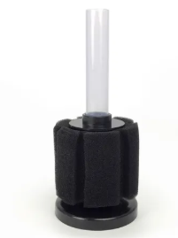
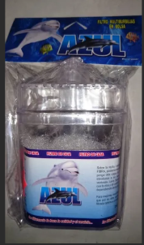
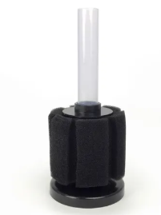
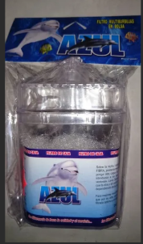
Hasta 5 Galones (20L). Ocupa poco espacio. Ideal para ajolotes y especies que no requieren mucha corriente.
 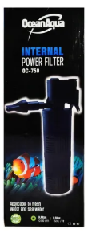
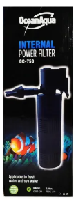
10 a 50 Galones (40L - 200L).
 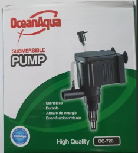
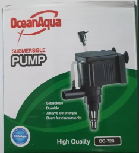
Para mover agua o usar con esponja filtrante. Alta potencia para flujo de agua en acuarios grandes.
 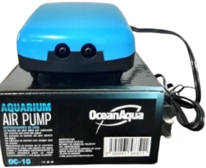
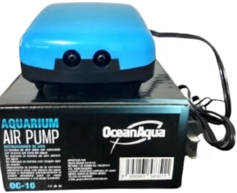

Para filtros de esponja, caja y oxigenación.
 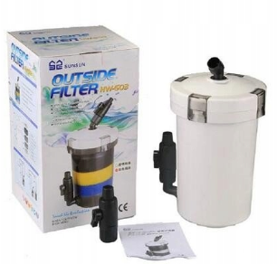
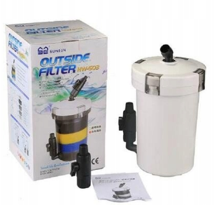

Para estanques y acuarios de grandes litros.
 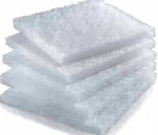
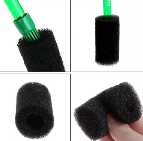
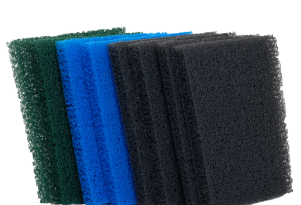
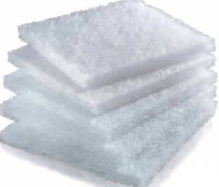
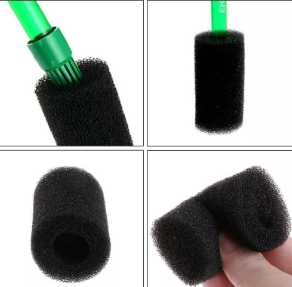
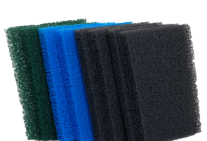


Mantener una temperatura estable es el factor más crítico para prevenir el estrés y las enfermedades en la mayoría de las especies acuáticas (peces tropicales, etc.). Un termostato de la potencia adecuada y un termómetro confiable son la combinación perfecta para crear un clima ideal y constante en tu acuario.
Nuestros termostatos están diseñados para ser totalmente sumergibles, ofreciendo un control de temperatura preciso y apagado automático al alcanzar el nivel deseado.
Regla de oro: 1 Watt por cada Litro de Agua (1W/L). Ejemplo: Una pecera de 100 L requiere un calentador de 100W.
Modelos disponibles: 25W, 50W, 100W, 200W, 300W.
Recordatorio importante: Si tu acuario es para un Ajolote (Axolote), no necesitarás un termostato de calor, sino de enfriamiento. Contacta a nuestro equipo para asesoría sobre mantener temperaturas bajas y seguras (14–20℃).
El termostato ajusta, pero el termómetro confirma. Nunca confíes únicamente en la perilla de tu calentador; usa un termómetro para asegurar la temperatura real del agua.
Sonda sumergible, pantalla externa. Máxima precisión y lectura fácil y rápida desde el exterior del acuario.
Adhesivo que se pega al cristal exterior. Económico y simple. Bueno para monitoreo rápido.
Opción tradicional y precisa. Requiere colocación interna dentro del acuario.